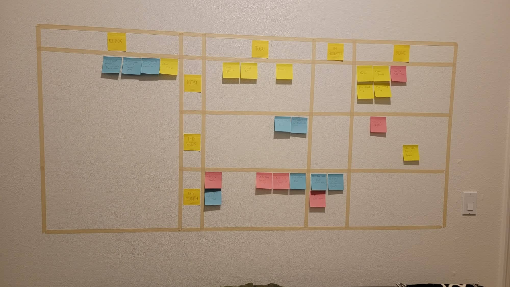
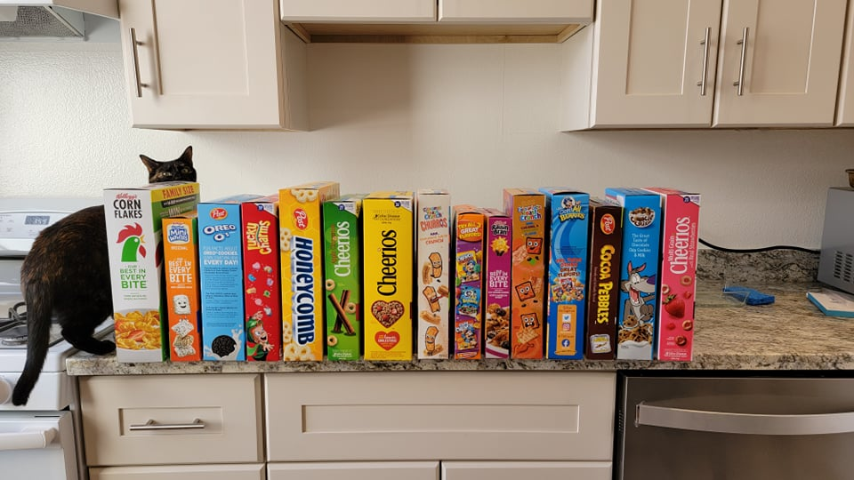
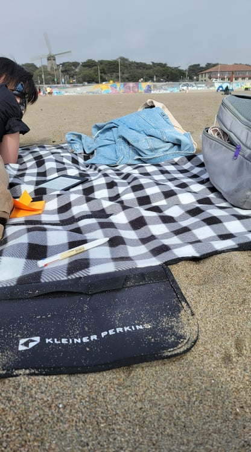
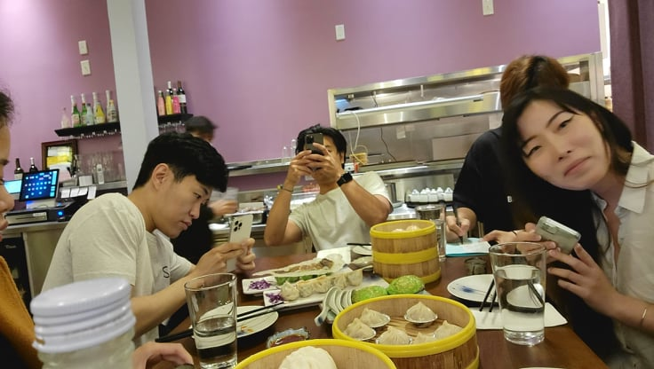
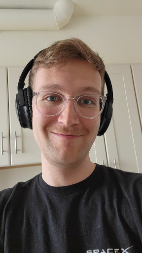

I think setting goals at the end of the "week" (I guess the week ends on Tuesday) is a good idea. It gives me context for what I need to spend the next week doing. With that in mind, I set up my new Kanban board. I divided it into three sections: day, week, and month. This lets me have a good idea of the goals that I need to accomplish at what time. So, here's my new Kanban board:
I also worked on my next proposal to Pieter on the UGhent dev tools. He pointed out the place where our work overlaps and it sounds like we could easily arrive at a contract.
On Wednesday, I got right to work on the first task for the dev-tools library. I needed to modify the traverser to have modular sub-traversers. It took a bit of refactoring, but in the end the update was relatively simple. No functionality was different, but it was organized better for the next thing I needed to do. I considered allowing developers to use dependency injection for their traversers, but that would have just complicated the already complicated typings I had set up for the library, so I decided against it.
On Thursday, I started by trying to tackle the goal of creating a "context" object that would eventually allow me to handle traversing circular dependencies. But, that got confusing. I was really missing having a white board, so I distracted myself by going to office depot and picking up a white board and an ethernet cable to finally connect our internet.
Once I got the board back the apartment and hung up, a lot of furniture had arrived. So, I spent a few hours assembling a bed and a treadmill desk. And with that our furniture is complete!
Also, after I mentioned that I loved a Cereal Cafe in London, Ailin ordered basically every cereal immaginable to turn us into a cereal cafe! Haha.
I wasn't feeling as motivated to work on the traverser library, so I swapped my attention to the Solid video series. I've been running out of videos recently, so I wrote the script for the next 16 videos.
After the distraction of the furniture yesterday, I returned to the traverser library, and it was a doozy. After a lot of refactoring and a lot of thought, I came to the conclusion that before I could continue with this library, I would first need my augmented object library (This is one of the libraries I wrote about to Pieter, but not one that he said overlaps with the work UGhent was planning on doing). So, I put all the tasks related to the traverser library in the icebox for now. (It's a cheaty way to accomplish my tasks, but it works.)
After that, I went with Ailin to the nail salon. I was supposed to go for a haircut, the the uber we were riding in messed up, so I just found a place nearby and did a walk-in haircut. Note to self. If a barbershop doesn't list its prices, that means its too expensive. Lesson learned.
After that, I sat down at a burger place and started writing Chapter 15 of StarJump while I waited for Ailin. Eventually I went to the Union Square Macy's to use the bathroom and continued writing from there.
When it was time to meet up with Ailin again, Jonathan had said that he wanted to have dinner at a restaurant called Chez Maman, so I lead Ailin on a walk over there. I didn't check the map and the route lead right through Tenderloin. I usually don't buy into the alarmist attitude towards bad neighborhoods. My mom always had one and I never saw any indication that I should be scared. The neighborhoods are a bit dirtier than other ones, but I'm accustomed to dirtiness. It brings charm like the lower eastside and the mission. Usually, when I see someone in a "bad neighborhood," we just share the sidewalk and go about our day. But, this time it was different. As Ailin and I walked by a large group of people hanging out on the sidewalk, I head the sound of a switchblade and saw one pulled a extended a large pocket-knife about a food away from my torso. He didn't do anything with it thankfully, and Ailin didn't even notice it, but it was scary. So, lesson learned. If I can, try to be a bit more cognizant of my surroundings.
It does make me feel bad to talk like this. I don't want to paint people hanging out in Tenderloin as scary people. I know that they're probably down on their luck and San Francisco's horrible housing policy probably doesn't help (Also Jonathan says that it has something to do with the District Attourney). I'm thinking of things I can do to help out. I can't do much about homelessness on my own, but I may be able to donate to something. I think I'll start donating 10% of my after-tax income when I start making money off these contracting gigs. I'm just not sure what I'll donate it to. I could choose a homeless shelter, or maybe I could donate things to adult or child education services to help make it easier to prevent homelessness. Maybe its possible to donate to public housing. I'll give it a think and we'll see where I can donate once the next check comes in.
Once we passed Tenderloin, we found out that the location had changed and we're actually eating at Jonathan's place, so we swapped direction and headed to Japantown. It was a fun dinner. We met up with Titus as well and met his roommate, Sam.
After a long night, we woke up late and I continued to work on Chapter 15, this time from the new treadmill desk.
Jonathan and Titus wanted to come down to get lunch at a place near us, so we hung out with them a bit. Then, it was time for Ailin and I to go to the beach. Ocean Beach wasn't that cold and it wasn't that warm either. We read on the beach for a couple of hours until we were uncomfortable enough to go home. We're told that San Francisco actually gets hotter in September, so maybe we'll try again then.
When we returned home, Jonathan and Titus wanted to have dinner in the mission district as well so I suggested a restaurant accross the street called "Bao." It was delicious, but if this is the usual way hanging out with Jonathan and Titus goes, I might have to watch my wallet. Hahaha!
Sunday was completely devoted to completing Chapter 15. I still think that I'm kinda slow at writing, but at least I got it finished. In this one, we have a bit of action, a bit of character development, and Anyo goes to a dark place.
On Monday, I started with a meeting with Brandon Muramatsu, an Associate Director of Special Projects at MIT. He filled me in a bit more on the Digital Credentials project, but he wasn't able to answer everyting. For that, I would need to arrange a meeting with Dmitri.
I also filmed all the videos for the next group of Solid shorts. The new filming setup feels great, but I wonder if the lighting highlights my blemishes. :| I had to shave my mustache before filming. I was growing it out because Ailin made a joke about growing one of them and I took the joke seriously to annoy her, but she got me back when she started calling the mustache cute and telling me not to shave it. But, I couldn't film videos with it! Here's a picture of what I looked like:
And finally, today I edited 8 of the Solid videos. I'll edit the final 8 tomorrow, but I think that's a good cadence. I'm not going to expect myself to edit all 16 of them in one day. Though, maybe I could.
I also had that meeting with Dmitri. He says that he's about to become the new technical head of the project, but it seems that because he's new, he doesn't yet have a full grasp of everything that needs to happen. I still got a better idea of what was going on, and I told him I'd compile a document that proposes what I can contribute.
On the Tim/SolidOS front, I finalized a meeting on Friday with Tim to nail down the scope. Tim hasn't been super responsive on the questions I had for him about the scope of the SolidOS project, so unfortunately, I was not able to nail it down this week as planned.
Finally, I did a bit of planning for an October vacation. My friend Laura is getting married on October 3rd in DC, so if we're going to be flying out to the east coast anyway, might as well do a lot. First, we'll visit Ailin's friends in Philedelphia, then we'll visit my brother in Baltimore, then Laura's wedding in DC, and finally we'll fly down to Orlando for the annual amusement park trip. I am trying to limit the spending we do on this trip though. We can't break the bank, but it is nice to be in a good enough position to have a jam packed week of visiting people!
So, now let's plan what needs to be done next week.